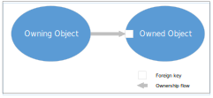

Inverse foreign key ownership in the archive domain graph
A foreign key defines an ownership relationship between two entities. Generally, foreign keys point from owned entities to owning entities in the archive domain graph. However, in certain rare cases, it is possible to define a foreign key that points from the owning entity to the owned entity in the archive domain graph.
The following graphic illustrates this concept.

To
illustrate, Charge and
BillingInstruction have
an ownership relationship with a foreign key from Charge to BillingInstruction. The following
Charge metadata definition
shows this relationship.
<?xml version="1.0"?>
<entity xmlns="http://guidewire.com/datamodel" desc="A charge against a policy" entity="Charge" ... >
...
<foreignkey archivingOwner="source"
columnName="BillingInstructionID"
desc="Link to containing BillingInstruction"
fkentity="BillingInstruction"
name="BillingInstruction"
nullok="false" />
...
</entity>In this example, the Charge entity is the owner of
the BillingInstruction
entity. The archivingOwner
attribute of source on
the BillingInstruction
foreign key indicates an inverse ownership relationship.
To illustrate, in the base GenericCenter configuration,
Claim and ClaimWorkComp have an ownership
relationship, with a foreign key from Claim to
ClaimWorkComp. The following Claim metadata
definition shows this relationship.
<entity xmlns="http://guidewire.com/datamodel" desc="Insurance claim" entity="Claim" ... >
...
<foreignkey archivingOwner="source"
columnName="ClaimWorkCompID"
desc="Claim's worker's compensation data"
fkentity="ClaimWorkComp"
name="ClaimWorkComp"
nullok="true"
triggersValidation="true"/>
...
</entity>The archivingOwner
attribute of source on
the ClaimWorkCompID foreign
key indicates an inverse ownership relationship. Thus, the Claim entity is the owner of the
ClaimWorkComp entity.
To illustrate, in the base
GenericCenter configuration, Contact and Address have an ownership relationship,
with a foreign key from Contact
to Address. The following
Contact metadata definition
shows this relationship.
<?xml version="1.0"?>
<entity desc="Represents a generic contact like a person or a business." entity="Contact" ...>
...
<foreignkey archivingOwner="source"
columnName="PrimaryAddressID"
desc="Primary address associated with the contact."
fkentity="Address"
name="PrimaryAddress"
nullok="true"
triggersValidation="true"/>
...
</entity>The archivingOwner attribute of source on the
Address foreign key indicates an inverse ownership relationship.
Thus, the Contact entity is the owner of the
Address entity.
See also